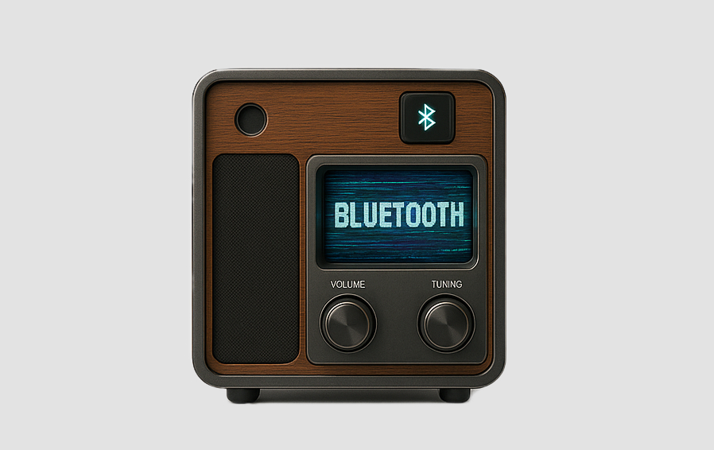
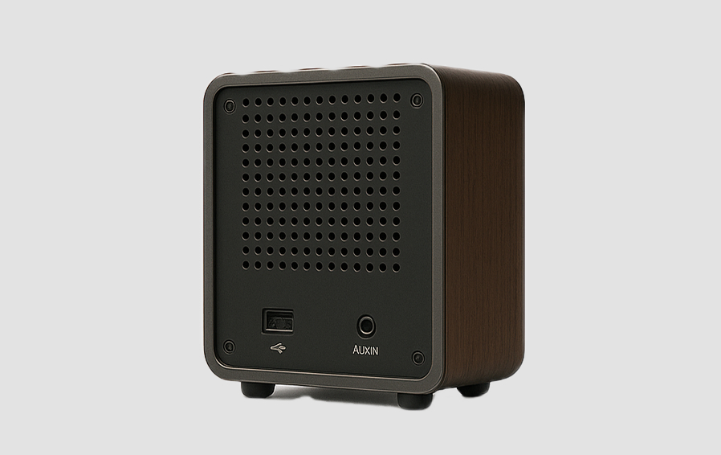
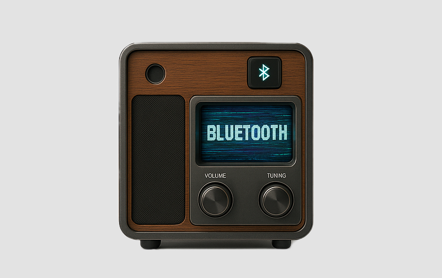
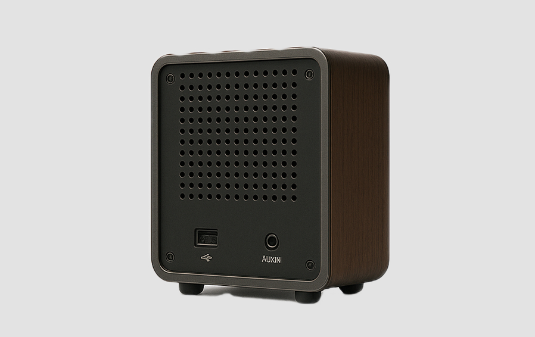

Vintone Tape
Vintone Tape — это серия медиаобъектов на базе старых радиоприёмников и катушечных магнитофонов, преобразованных в автономные аудиосистемы с художественным акцентом. Эта линейка существует на стыке технологии и скульптуры: устройства не просто играют звук, они сами становятся сообщением, носителями формы, идеи и памяти.
 



Характеристики после апгрейда:
Беспроводной модуль: Bluetooth 5.2 (дальность до 10 м, устойчивое соединение, низкая задержка)
Аудиовход: AUX-вход (3.5 мм) — скрыт на задней панели
Аккумулятор: до 10 часов автономной работы
Звук:
Встроенный широкополосный динамик с модернизированной акустической камерой
Усилитель класса D с защитой от искажений и перегрева
Объём корпуса усиливает резонанс и создаёт плотный винтажный тембр
Отзывчивость звука адаптирована под дерево — глубина, мягкость, тепло
Дизайн и материалы:
Оригинальный корпус колонок «Радиотехника S-30 / S-90» восстановленный вручную
Натуральное дерево, полированная фурнитура, акриловая шкала
Поверхности обработаны вручную в трёх вариантах: натуральный лак, графит, винтажный орех
Подсветка шкалы — мягкий тёплый LED
Особенности:
Полностью бесшумная работа: механизмы и вращатели демонтированы
В комплекте:
Устройство (Vintone Tape на базе корпусa Ritmix RPR-102.)
USB-C кабель + адаптер питания 220В
AUX кабель в тканевой оплётке
Паспорт изделия с техническими характеристиками
Инструкция с историей модели и рекомендациями по уходу
Упаковка из переработанных материалов
Полная электробезопасность и энергоэффективность: низкое энергопотребление,
автоматическое отключение при простое.
Сборка вручную: каждый экземпляр проходит проверку качества
и имеет индивидуальный номер.